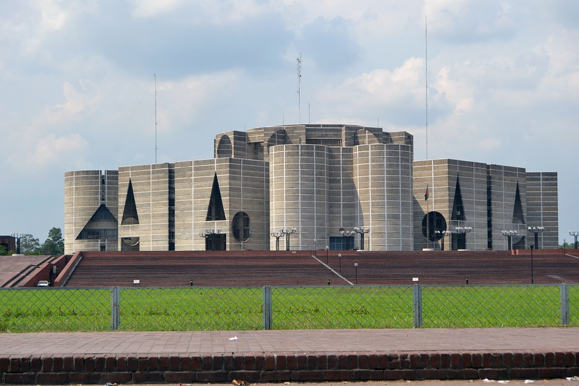
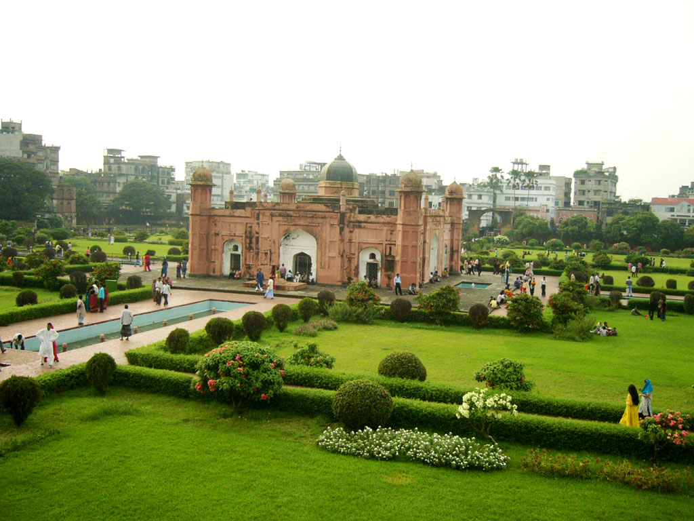
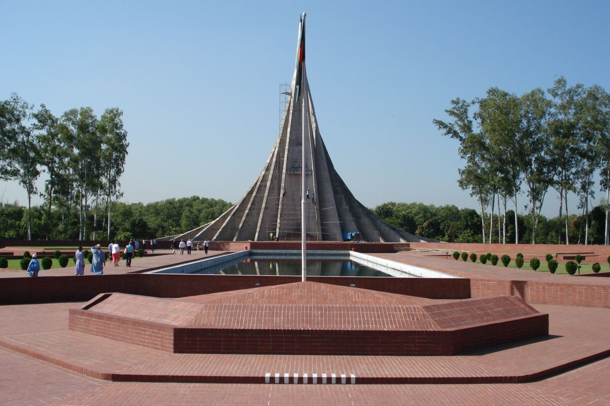
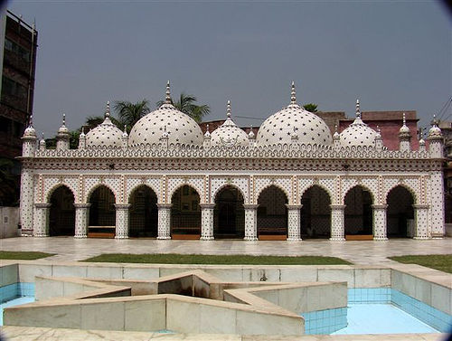

Bangladesh is a beautiful country, but very few people know about it. It has many amzing places to travel which can give you a great experience about the country and the poeple. I have listed a handful of historical places that I really like. Hopefully you will enjoy looking over these places. You can click on the link by each picture in order to get more information about each places. Fee free to reach out to me via Contact Us with questions.
Here are some national symbols:
| Ahsan Manzil:Ahsan manzil | Parliament of Bangladesh:Jatiyo Sangsad bhaban | Hanging Bridge:Hanging Bridge in Rangamati | |
|---|---|---|---|
|
 | |
|
| Lalbagh Fort:Lalbagh fort | Nilachal:Nilachal | Shahid Minar:Shahid Minar | Star Mosque:Star Mosque |
|  | |
 |  |